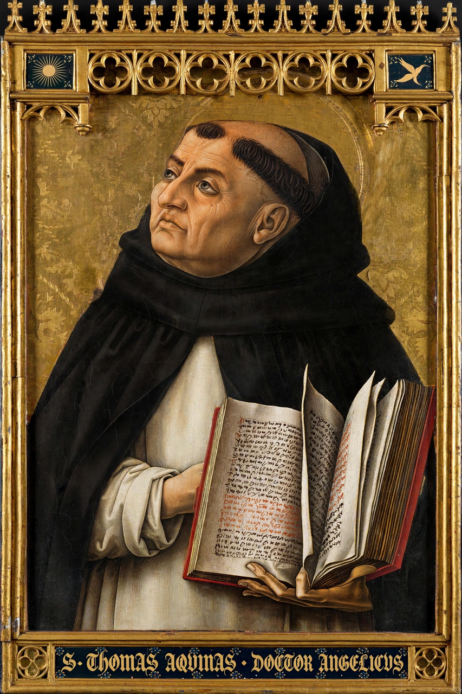

From Wikipedia, the free encyclopedia
| Thomas Aquinas | |
|---|---|
| Born | 1225, Roccasecca, Kingdom of Sicily |
| Died | 7 March 1274, Fossanova Abbey |
| Era | Medieval philosophy |
| Main interests | Theology, metaphysics, ethics |
| Notable works | Summa Theologiae (unfinished); Summa contra Gentiles |
| Notable ideas | Five Ways; natural law; act and potency |

Thomas Aquinas (1225–1274) was an Italian Dominican friar, philosopher and theologian, the foremost figure of scholasticism and a Doctor of the Catholic Church. His unfinished masterpiece, the Summa Theologiae, synthesises Aristotelian philosophy with Christian doctrine and sets out the 'Five Ways' — five arguments for the existence of God from motion, causation, contingency, degrees and purpose.
Born to a noble family near Aquino, Thomas was educated at Monte Cassino and Naples, joined the Dominicans against his family's wishes (they detained him for a year), and studied under Albertus Magnus in Paris and Cologne. He taught in Paris, Rome and Naples, writing vast commentaries on Aristotle and Scripture. After a mystical experience in December 1273 he stopped writing, calling his work 'so much straw'. He died travelling to the Council of Lyon in 1274 and was canonised in 1323.
Aquinas holds that faith and reason are harmonious: some truths (God's existence) are demonstrable, others (the Trinity) known only by revelation. His natural-law ethics grounds moral precepts in human nature's God-given ends. He distinguishes essence and existence, act and potency, and adopts Aristotle's four causes. Thomism became near-official Catholic philosophy after Leo XIII's Aeterni Patris (1879) and remains influential in analytic philosophy of religion and ethics.
Scholasticism, Philosophy of religion, Natural law, Aristotle